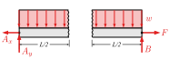
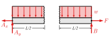

Section 8.3 Internal Loads at a Point
This section covers the procedure to compute the internal normal force, shear force, and bending moment at a designated point in a multiforce rigid body.
Consider the frame shown in Figure 8.3.1 consisting of two-force members \(GD\) and \(BE\text{,}\) and multiforce members \(AD\) and \(CF\text{.}\) Since no information is provided, we can assume that the components have negligible weight. The internal loading within the two-force members is purely axial, but the multiforce members will be subject to the complete set of internal loadings.

To find the internal loadings at a specified point within one of the members, we make an imaginary cut there.
Figure 8.3.2 shows the free-body digram of member \(AD\text{,}\) with a proposed cut between points \(D\) and \(C\text{.}\) The free-body diagram is shown with reactions for pinned connections at \(A\) and \(C\) and forces from the two-force members at locations \(B\) and \(D\text{.}\)

We then separate the free-body diagram of the member into two independent free-body diagrams, one above the cut and one below. This is analogous to the Method of Sections technique of Chapter 6. The free-body diagrams for the two sections of the member are shown in Figure 8.3.3. The three internal forces are are exposed and labeled \(V\text{,}\) \(N\text{,}\) and \(M\text{.}\) Either free-body diagram can be used to solve for the internal forces, so it is wise to choose the easier one. Recognizing which one is easier takes practice, but look for the piece with more known and fewer unknown values.

Note that the internal loadings at the cut are drawn in the positive direction according to the sign conventions for internal loads, that they act in opposite direction either side of the cut, and they cancel out if the object is put back together.
This technique can be used to find the internal loads at any point within any object. In the examples below we will finding the internal loadings at a specific point in load carrying beams.
Example 8.3.4. Internal loads in a simply supported beam.
A beam of length \(L\) is supported by a pin at \(A\) and a roller at \(B\) and is subjected to a horizontal force \(F\) applied to point \(B\) and a uniformly distributed load over its entire length. The intensity of the distributed load is \(w\) with units of [force/length].
Find the internal loads at the midpoint of the beam.
At the midpoint of the beam,
-
Find the external reactions.
Begin by drawing a free-body diagram of the entire beam, simplified by replacing the distributed load \(w\) with an equivalent concentrated load at the centroid of the rectangle. The magnitude of the equivalent load \(W\) is equal to the “area” under the rectangular loading curve.
\begin{equation*} W = w(L) \end{equation*}
Then apply and simplify the equations of equilibrium to find the external reactions at \(A\) and \(B\text{.}\)
\begin{align*} \Sigma M_A \amp = 0\\ -(wL)(\cancel{L}/2)+(B)\cancel{L} \amp = 0\\ B \amp = wL/2 \\ \\ \Sigma F_x \amp = 0 \\ -A_x+F \amp = 0\\ A_x \amp = F\\ \\ \Sigma F_y \amp = 0\\ A_y-wL +B_y \amp = 0\\ A_y \amp = wL-wL/2\\ \amp = wL/2 \end{align*} -
Cut the beam.
Cut the beam at the point of interest and separate the beam into two sections. Notice that as the beam is cut in two, the distributed load \(w\) is cut as well. Each of these distributed load halves will support equivalent point loads of \(wL/2\) acting through the centroid of each cut half.
 
 -
Add the internal forces.
At each cut, a shear force, a normal force, and a bending moment will be exposed, and these need to be included on the free-body diagram.
At this point, we don't know the actual directions of the internal loads, but we do know that they act in opposite directions. We will assume that they act in the positive sense as defined by the standard sign convention.
Axial forces are positive in tension and act in opposite directions on the two halves of the cut beam.
Positive shear forces act down when looking at the cut from the right, and up when looking at the cut from the left. An alternate definition of positive shears is that the positive shears cause clockwise rotation. This definition is useful if you are dealing with a vertical column instead of a horizontal beam.
Bending moments are positive when the moment tends to bend the beam into a smiling U-shape. Negative moments bend the beam into a frowning shape.
For vertical columns, positive bending moments bend a beam into a C shape and negative into a backward C-shape.
The final free-body diagrams look like this.

Horizontal beams should always have assumed internal loadings in these directions at the cut, indicating that you have assumed positive shear, positive normal force and positive bending moments at that point.
-
Solve for the internal forces.
You may uses either FBD to find the internal loads using the techniques you have already learned. So, with a standard \(xy\) coordinate system, forces to the left or up are positive when summing forces and counterclockwise moments are positive when summing moments.
Using the left free-body diagram and substituting in the reactions, we get:
\begin{align*} \Sigma F_x \amp = 0\\ -A_x+A \amp = 0\\ A \amp = A_x = F\\ \\ \Sigma F_y \amp = 0\\ A_y-wL/2-V \amp = 0\\ V \amp = wL/2 - wL/2\\ V \amp = 0\\ \\ \Sigma M_\text{cut} \amp = 0\\ (wL/2)(L/4)-(A_y)(L/2)+M \amp = 0\\ M \amp = - wL^2/8 + wL^2/4\\ M \amp = wL^2/8 \end{align*}Using the right side free-body diagram we get:
\begin{align*} \Sigma F_x \amp = 0\\ -A+F \amp = 0\\ A \amp = F\\ \\ \Sigma F_y \amp = 0\\ V-wL/2+B_y \amp = 0\\ V \amp = wL/2 - B_y\\ V \amp = wL/2 - wL/2\\ V \amp = 0\\ \\ \Sigma M_\text{cut} \amp = 0\\ -M-(L/4)(wL/2)+(L/2)(B_y) \amp = 0\\ M \amp = -W L^2/8 + wL^2/4\\ M \amp = WL^2/8 \end{align*}
Regardless of which side is chosen, we get the same results for the internal loads at the chosen point.
When you solve for the internal loadings, the results can be either positive, negative, or sometimes zero. Negative values indicate that the actual direction of the load is opposite to the assumed direction. Since we assumed all three internal loads were positive as defined by the standard sign convention, a negative answer means that the load actually acts in the opposite direction to the vector shown on the free-body diagram.
Example 8.3.5. Internal loads in a cantilever beam.
Consider a cantilever beam which is supported by a fixed connection at \(A\text{,}\) and loaded by a vertical force \(P\) and horizontal force \(F\) at the free end \(B\text{.}\) Determine the internal loads at a point a distance \(a\) from the left end.

If you think ahead, you may not need to find the reactions at \(A\text{.}\)
At the midpoint,
-
Determine the reactions.
Draw an FBD of the entire, un-cut beam and determine the reactions.

Notice that only the applied loads and support reactions are included on this un-cut beam FBD. The internal loads are only exposed and shown on a FBD after the beam is cut.
Use this free-body diagram and the equations of equilibrium to determine the external reaction forces.
\begin{align*} \Sigma F_x \amp = 0 \amp\amp \implies \amp A_x \amp = F\\ \Sigma F_y \amp = 0 \amp\amp \implies \amp A_y \amp = P\\ \Sigma M_A \amp = 0 \amp\amp \implies \amp M_A \amp = PL \end{align*} -
Section the beam.
Take a cut at the point of interest and draw a FBD of either or both parts. Try to choose the simpler free-body diagram. If one side has no external reactions, then you can skip the previous step if you choose that side.

The free-body diagrams of both portions have been drawn with the internal loads indicated in the positive direction defined by the standard sign convention.
The axial force is shown in tension on both parts. This force has been named \(\vec{N}\) so its name doesn't conflict with the forces at point \(A\text{.}\)
The shear force \(\vec{V}\) is positive when the shear is down on the right face of the cut and up on the left face.
he bending moment \(\vec{M}\) is positive if the bending direction would tend to bend the beam into a concave upward curve.
Always assume that the unknown internal loads act in the positive direction as defined by the standard sign convention.
-
Solve for the internal loads.
Solve for the three unknown internal loads.
\begin{gather*} \Sigma F_x = 0 \implies N = F\\ \Sigma F_y = 0 \implies V = A_y\\ \Sigma M_\text{cut} = 0 \implies M = - Pb \end{gather*}Once you have found the reactions and drawn a free-body diagram of the simpler portion with the normal force, shear force, and bending moment assumed positive, you then solve for the unknown values and signs just like any other equilibrium problem.
This workflow typically includes:
Establishing a horizontal \(x\) and vertical \(y\) coordinate system.
Taking a cut at the point of interest.
Assuming that the internal force act in the positive direction and drawing a free-body diagram accordingly
Using \(\Sigma F_x=0\text{,}\) \(\Sigma F_y=0\text{,}\) and \(\Sigma M_z=0\) to solve for the three unknown internal loads.
The shear force \(V\text{,}\) normal force \(N\text{,}\) and bending moment \(M\) are scalar components and they may be positive, zero, or negative depending on the applied loads. The signs of the scalar components together with the sign convention for internal loads establish the actual directions of the shear force, normal force and bending moment vectors.
Subsection 8.3.1 Interactive Internal Loading
The internal loading inside a beam depends on the load that the beam is supporting and differs from point to point. This simply supported beam supports a uniformly varying load. The interactive traces out the value of the shear and bending moment as you move point \(C\text{.}\) Can you deduce the relation between the triangular loading and the value of the shear and bending moment?